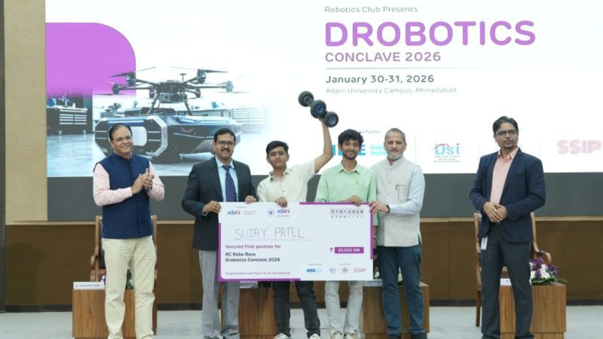

HELLO
I'M SHIVAR
A ROBOTICS ENGINEER
I am a Robotics & Automation student at Government Polytechnic, Ahmedabad. I chose a hands-on technical diploma directly after 10th grade to focus on physical hardware, motion controllers, and actuation loops rather than spending years studying raw theory.

About Me
All my competition prize money—including the ₹10,0,000 first prize award at Robofest Gujarat 5.0 and the ₹2,50,000 consolation prize at Robofest Gujarat 3.0—has been directly reinvested to fund our team's startup, Project & Innovation Lab, in Ahmedabad. We use the funds to maintain custom CNC machinery, 3D printers, PCB millers, and local electronic inventory blocks.
Technical Skills
Robot Operating System (ROS) • Autonomous Navigation • Closed-loop PID Control • Kinematics & Motion Planning • C/C++ & Embedded C • Python • Raspberry Pi 5 • RPi Pico 2 W • Arduino Mega • ToF Sensors • MPU6050 (6-DOF IMU) • GY-25 Gyroscope • PLC (Ladder Logic) & PID Tuning • PCB Design & 3D Printing • CAD (Autodesk Fusion 360) • Web & App Development • Satellite Image Analysis
Technical Projects
- Robofest Gujarat 5.0 (Autonomous AMRs) Engineered a commercial-grade Autonomous Mobile Robot (AMR) utilizing Time-of-Flight (ToF) sensors, PCA9548A multiplexers, and a GY-25 gyroscope for yaw alignment and obstacle avoidance. Won 1st Prize (₹10 Lakh Category). Embedded C • ToF Sensors • PCA9548A I2C • GY-25 Gyro
- Rath Yatra 2026 Fleet Telemetry Deployed 28 custom IoT/GPS/Motion-tracking hardware devices monitoring a 101-truck fleet in real-time, which was actively monitored by the Chief Minister of Gujarat. RPi Pico 2 W • GPS Telemetry • Cellular IoT • IMU Sensors
- Swadeshi Parakh Spearheaded a rapid 5-day sprint to launch the Swadeshi product verification platform live at GMDC Ground. Received an official letter of appreciation from Shri Bhupendra Patel (Hon'ble CM of Gujarat). Web & App Dev • UI/UX Design • Database Integration
- Self-Balancing Robot (Robofest 3.0) Built a self-balancing two-wheeled robot using an Arduino Mega, MPU6050 IMU, stepper motors, and closed-loop PID control algorithm to maintain upright stability. Won Consolation Prize (₹2.5 Lakh Award). Arduino Mega • MPU6050 IMU • PID Tuning • Stepper Motors
Contact
Have an automation challenge, project collaboration, or venture idea? Send me a message: